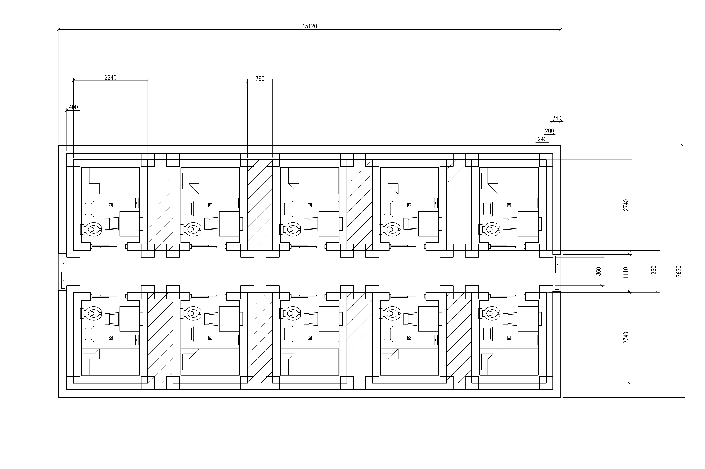

Architectural Proposal + Essay, 2026
Human Processing Array (HPA) — Facility Specification Document
Two identical facilities, 180m × 191.68m each, five stories, 25,880 human processing units arranged as a three-layer feedforward neural network. The network classifies handwritten digits (0–9). Output accuracy is not a design requirement.
The two facilities operate on opposing 12-hour shifts to provide continuous 24-hour classification. Facility A works 06:00–18:00; Facility B works 18:00–06:00. Their outputs are interleaved by a central coordination unit.
Each facility is designed for continuous, unattended operation. All materials and systems are commercially available. No special security or oversight is required beyond that of any industrial building.
The Absent Question
After the oil tanker hit the city, the sky turned black for a day. Then fire ran down the streets. Then the weather turned cold, and whatever had been in the smoke came down with the rain, acidic enough to burn skin, though we didn't know that immediately. When the rain stopped I went outside. I couldn't count the dead birds and cats on the streets. I stopped trying.
I am telling you this not to situate my suffering, which is beside the point, but to describe a specific quality of experience that I've been trying to name ever since: the feeling of being inside a system that continues to function while you, as a person, are not a variable it accounts for. The city kept running. The infrastructure held. Water came from taps. The internet, when it wasn't cut, delivered content. And yet the system had no field, no column in any of its spreadsheets, no parameter in any of its models, for what it was like to walk through streets lined with small dead bodies after a fire that no one had been warned about, in a country where no one would be held responsible, where the rain itself had become a hazard.
The system wasn't cruel. That's the thing I kept returning to. Cruelty requires acknowledgment. The system simply had not asked.
Hannah Arendt, sitting through the trial of Adolf Eichmann in Jerusalem in 1961, arrived at a conclusion that disturbed her more than she expected: that the man responsible for coordinating the deportation and murder of millions was not a monster. He was, in her assessment, terrifyingly ordinary. A bureaucrat. A man who had learned to stop imagining. What she called the banality of evil was not the triviality of evil — she was not diminishing what had happened. She was describing its mechanism. The horror was not that Eichmann hated. The horror was that he had structured his entire cognitive life so that the question of what another person was experiencing never needed to arise.
The banality is in the foreclosure of the question, not in the answer. A design process that never opens the field 'what does the occupant experience' is not necessarily malevolent. It may be efficient. It may be entirely rational given its own premises. The premises are the problem, and the premises are often invisible because they've been built into the structure of the question before anyone sits down to answer it.
Architecture asks: what does this body require to remain operational in this space? The question is already there in the building code, in the structural calculations, in the fire egress requirements. It is a question about bodies, not about persons. And bodies, it turns out, require very little. A certain temperature range. A certain caloric input. A certain volume of air per hour. Horizontal rest for some fraction of the day. These are the parameters. They can be calculated. They can be met with precision and at scale. The body will continue.
Dignity is not a parameter. It is not that dignity was considered and rejected. It was not considered because there is no field for it in the question the design process knows how to ask.
Theo Angelopoulos made films in which humans moved through landscapes that did not care about them. Not hostile landscapes — hostile would be too easy, would still be a relationship. Indifferent ones. Long takes in which figures walked through fog, through history, through Greece's endless unresolved grief, and the camera simply watched them without cutting away. His great subject, he said, was the great sorrow of being human. Not the injustice of it, not the tragedy of it, but its specific weight, the weight of being a person in a world that processes you as something else.
The long take in Angelopoulos is itself a philosophical position. It refuses the edit. It refuses the narrative compression that turns a person's experience into an event. In Landscape in the Mist, two children cross a winter border into a country that may not exist, and the camera holds on them for seconds longer than any film school would recommend, and in that excess of attention something happens: you cannot look at them without imagining what they are experiencing. The duration forces the question Arendt said Eichmann refused to ask.
I've been thinking about what the opposite of the long take is. I think it's the one-second classification cycle. Input arrives. Output is produced. The cycle completes. No duration is extended. No frame holds. The system's attention is not attention at all, it is processing, which is a different operation entirely. One per second, indefinitely.
Since the 1940s, we have been building machines that think like us. The project has a name, artificial intelligence, and a founding fantasy: that cognition is substrate-independent, that the pattern matters and not the medium, that if you can reproduce the input-output behaviour of a mind you have, in some meaningful sense, reproduced the mind. Neural networks are the furthest development of this intuition. They are modelled explicitly on the structure of biological neural tissue. The neuron is the unit. Layers of neurons are the architecture. The network learns.
What I became interested in was the reversal. Not the machine made in the image of the human, but the human configured to function as the machine. Not the imitation of cognition but the substitution of persons for components. The MNIST benchmark exists because we needed a standard task against which to test classifiers. It is a dataset of handwritten digits, 0 through 9, 70,000 examples, used for over thirty years as the baseline test of whether a new algorithm can learn. It has no application beyond evaluation. It is a benchmark, which means its only purpose is to confirm that classification is possible.
This is what the Human Processing Array classifies. Not medical images. Not surveillance footage. Not anything that would give the operation a legible moral valence, something to argue about. Handwritten digits, for no downstream purpose, at one classification per second, indefinitely. The prisoners, I will call them that, though the proposal document does not, are not producing anything. They are confirming a capability that has already been confirmed ten thousand times by machines that do it faster and more accurately. Their entire output is a redundant proof.
I chose this deliberately. A more obviously malevolent application — facial recognition for an authoritarian state, say — would give the audience somewhere to put their outrage. The target would become the application rather than the structure. What interests me is the structure. The uselessness of the output is not incidental. It is the argument. The system does not need the prisoners to produce anything valuable. It needs them to press buttons. Minimum viable human: a body that can distinguish left from right, twelve or more years old, alive. These are the intake criteria. Nothing else was asked.
The indifference is not a design flaw. It is the design. A system that punishes you still acknowledges you. It says: your action matters enough to correct. A system that rewards you says: your action matters enough to encourage. Indifference says nothing. It does not register your existence. In the Human Processing Array, there is no reward for pressing correctly and no punishment for pressing wrong. There is not even a consequence for stopping entirely. The screen continues. The numbers continue. The block's majority recalculates without you. The facility hums at the same frequency whether you press left, right, both, neither, or sit with your hands in your lap until you die. The system does not distinguish. It was never looking at you. It was looking at the aggregate, and the aggregate does not notice the removal of a single digit from its sum. That is the importance: to make visible a condition that already governs most of our lives. We are already pressing buttons in systems that do not care if we press. We are already irreplaceable only in the sense that no one is irreplaceable. The prison gives this condition walls and a roof and a monthly maintenance schedule. It says: look. This is not a dystopia. This is your office. This is your country. The only thing missing was the honesty to admit that no one was ever coming to check on you.
The sleeping platform is 1,750 millimetres long. An adult of average height will sleep with knees slightly bent. This is sufficient. I use that word precisely and without irony: sufficient is the only threshold the architecture recognises. The platform is not designed for comfort, which would require asking what comfort means to the body lying on it. It is designed for minimum viable rest, which requires only that prolonged immobility not cause disease that reduces operational capacity. The distinction is architectural, and it is also philosophical, and it is also, if you look at it from a certain angle, the operating principle of most of the systems that human beings inhabit.
I am not making a simple claim about capitalism, though capitalism is not innocent here. The absent question predates capitalism and will outlast it. It is inherent in any system that achieves sufficient scale to require abstraction, that must, by necessity, replace persons with categories of persons, and then, gradually, with the minimum viable instance of the category. The cell is 5 square meters because 5 square meters is what a body requires to not develop the diseases associated with extreme confinement. The question of what a person requires to remain a person was not asked, not because it was considered and dismissed, but because it was never in scope.
This is the architecture of indifference. It is not an architecture of hatred or punishment. The HPU receives food three times daily, water continuously, 25 degrees Celsius year-round, twelve hours of light and twelve hours of dark. The HPU is, by any biological measure, cared for. The care is total and the indifference is total and these two facts coexist without contradiction because care, here, is a synonym for operational maintenance.
I designed this facility during an internet blackout, in a city I did not choose to return to, in a country whose systems have their own version of the absent question. I am not drawing a direct line between my situation and the HPU's. The line is not direct. But I know something, from the inside, about the feeling of being in a place that provides the minimum viable conditions for your continuity while having no mechanism for registering what you actually are. The jealousy in the eyes of people who know you went somewhere and came back. The sorrow in the eyes of those who didn't. The specific texture of a system that processes your presence without acknowledging it.
I walked out after the rain and looked at the dead birds and thought: this is what the city looks like when the infrastructure fails in a way that makes the indifference visible. The infrastructure is usually more seamless. Usually you can't count it.
The HPA makes it visible by design. Every measurement in the cell answers one question and only one question: what does this body require to remain operational? The bed answers it. The drain answers it. The feeding port answers it. The ceiling hose answers it. Nothing in the cell answers any other question, because no other question was in scope. The facility is a complete and internally consistent answer to an incomplete question, and the incompleteness is invisible from inside the question.
Arendt said the reluctance to imagine what the other person is experiencing was the banality of evil. I want to suggest something adjacent: that the structure of the question precedes and enables the reluctance. You cannot refuse to imagine what you have already designed a system that makes it unnecessary to imagine. The staff in the control room drink coffee. They clock out. They drive home. They are not refusing anything. The architecture has already done the refusing for them.
What I am building is not a prediction. I am not arguing that this will happen, or that it is happening in some disguised form, though the latter is closer to true than comfortable. I am building a mirror of a structure that is already present, in industrial logistics, in carceral systems, in the supply chains that move bodies through processes that have no field for the experience of the body being moved. I am making it legible by removing the aesthetic distance. The cell is not a metaphor. The feeding port is not a symbol. The ceiling hose is not a reference to anything. They are the minimum viable specifications for a body that presses buttons, stated plainly, in the language of a construction document.
The MNIST benchmark achieves roughly 99.7% accuracy on modern hardware, in milliseconds per classification, at a cost approaching zero. The HPA achieves some lower accuracy, over seconds, at a cost of $251 million and twenty-five thousand, eight hundred and eighty lives. The output is identical. The log is not reviewed.
I keep thinking about Angelopoulos's camera. The way it holds. The way it refuses to look away or to cut. The way attention itself, extended past the point of comfort, becomes a form of ethics, because to hold the frame is to refuse the system's assertion that nothing worth imagining is happening here. The HPA's screen updates at one hertz. One image per second. No frame is held. Each image replaces the last. The system has no mechanism for the kind of attention that Angelopoulos practised, because attention is not a parameter. Processing is a parameter. One per second. Indefinitely.
We always tried to make machines like us. This time, I wanted to ask what it would look like if we made ourselves like them. The answer is: like this. A building. Commercially available components. Standard industrial codes. No specialised labour. No ethical approval required. Can be built tomorrow.
The horror is not that this could be done. The horror is that the question of whether it should be done is the same question that has been absent from the design of every system that processes humans at scale. We simply don't usually draw the blueprints.
There is a poem I wrote during the blackout, about a bird smaller than a sparrow. When storms came, the bird would lie down and lift its trembling legs toward the sky, as if it believed its delicate legs could hold up the falling sky. I wrote it because of all the things that were happening, what hurt most was not being able to reach the people I loved. Some of them no longer thought about me. I still thought about them.
I've been thinking about this project. I see it everywhere. On the street. On dating apps. In the way people reject each other for the rush of being wanted. In the way I walk past faces and they walk past me. In my sister's jealousy, my friend's absence and more.
I think I made something so general that I trapped myself inside it. I sit in front of a screen. I press buttons, hoping to create something. I tell myself this one will be the one. The one that gets me out of this misery. The one that gives me recognition. The one that makes it all mean something.
But I've seen this before. Every project I make turns out to be just enough. Enough to post. Enough to put on my website. Enough to keep going.
I had a grand vision for this essay, a revolutionary, award winning essay or even a book on humanity, machines, philosophy, and everything. But what I made is a minimum viable essay, alongside a minimum viable project. From a minimum viable artist.
I am the architect of this prison. I am also the prisoner.
In concrete and reinforced steel and brushed stainless steel and Abbott Ensure TwoCal HN, delivered three times daily at 250 millilitres, pump‑controlled.
These two things are not in contradiction.
Hossein Askari, Tehran, 2026